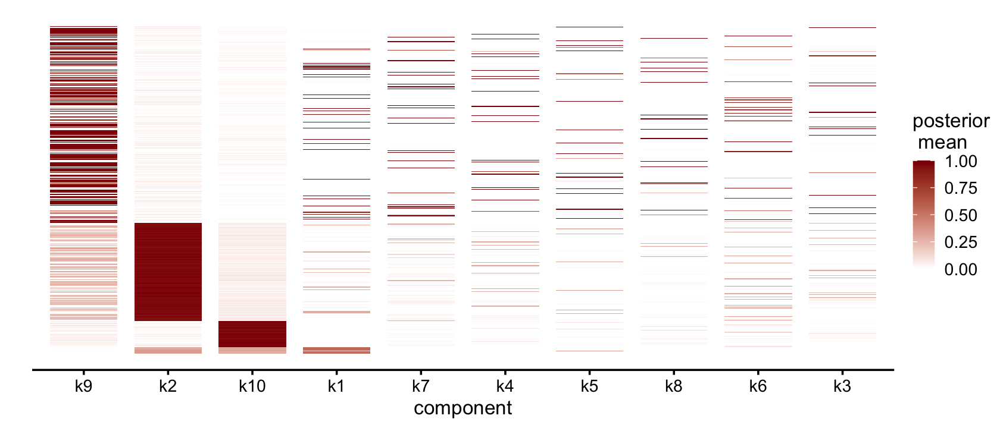
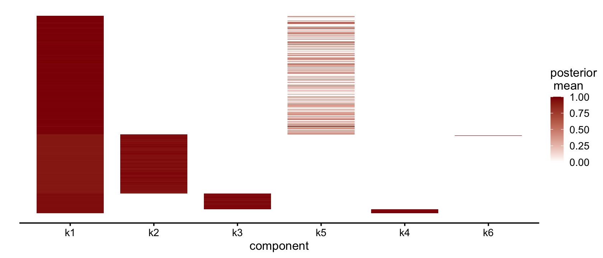

NMF analyses of simulated data
Jason Willwerscheid and Peter Carbonetto
Last updated: 2024-07-09
Checks: 6 1
Knit directory: ebnmf-paper/
This reproducible R Markdown analysis was created with workflowr (version 1.7.1). The Checks tab describes the reproducibility checks that were applied when the results were created. The Past versions tab lists the development history.
The R Markdown is untracked by Git. To know which version of the R
Markdown file created these results, you’ll want to first commit it to
the Git repo. If you’re still working on the analysis, you can ignore
this warning. When you’re finished, you can run
wflow_publish to commit the R Markdown file and build the
HTML.
Great job! The global environment was empty. Objects defined in the global environment can affect the analysis in your R Markdown file in unknown ways. For reproduciblity it’s best to always run the code in an empty environment.
The command set.seed(20231214) was run prior to running
the code in the R Markdown file. Setting a seed ensures that any results
that rely on randomness, e.g. subsampling or permutations, are
reproducible.
Great job! Recording the operating system, R version, and package versions is critical for reproducibility.
Nice! There were no cached chunks for this analysis, so you can be confident that you successfully produced the results during this run.
Great job! Using relative paths to the files within your workflowr project makes it easier to run your code on other machines.
Great! You are using Git for version control. Tracking code development and connecting the code version to the results is critical for reproducibility.
The results in this page were generated with repository version c03baf4. See the Past versions tab to see a history of the changes made to the R Markdown and HTML files.
Note that you need to be careful to ensure that all relevant files for
the analysis have been committed to Git prior to generating the results
(you can use wflow_publish or
wflow_git_commit). workflowr only checks the R Markdown
file, but you know if there are other scripts or data files that it
depends on. Below is the status of the Git repository when the results
were generated:
Ignored files:
Ignored: .DS_Store
Ignored: .Rhistory
Ignored: .Rproj.user/
Ignored: data/.DS_Store
Ignored: data/cbcl.rds
Ignored: data/faces.tar.gz
Ignored: data/faces/
Ignored: data/frey_rawface.mat
Ignored: data/lfw-bush.rds
Ignored: data/lfw-bush/
Ignored: data/lfw-deepfunneled.rds
Ignored: data/lfw-deepfunneled/
Untracked files:
Untracked: analysis/cbcl2.Rmd
Untracked: analysis/noisy_swimmer_more_edit.Rmd
Untracked: analysis/simdata.Rmd
Untracked: code/bush.R
Untracked: figs/
Untracked: flash_greedy_init_noisy_F.txt
Untracked: flash_greedy_init_noisy_L.txt
Untracked: matlab/Ebnmf.prj
Untracked: matlab/noisy_swimmer_bayesnmf.mat
Untracked: matlab/noisy_swimmer_nmf_greedy_init_sW=true.mat
Untracked: matlab/noisy_swimmer_nmf_sW=0.6.mat
Untracked: matlab/noisy_swimmer_nmf_sW=0.75.mat
Untracked: matlab/noisy_swimmer_nmf_sW=0.85.mat
Untracked: matlab/noisy_swimmer_nmf_sW=0.9
Untracked: matlab/noisy_swimmer_nmf_sW=0.95.mat
Untracked: matlab/noisy_swimmer_nmf_sW=0.99
Untracked: matlab/noisy_swimmer_nmf_sW=0.99.mat
Untracked: matlab/noisy_swimmer_nmf_vanilla.mat
Untracked: matlab/resources/
Untracked: matlab/simdata.asv
Untracked: matlab/simdata.m
Untracked: matlab/simdata.mat
Untracked: matlab/simdata_flash_greedy_init_F.txt
Untracked: matlab/simdata_flash_greedy_init_L.txt
Untracked: matlab/simdata_nmf_greedy_init_sW=0.4.mat
Untracked: matlab/simdata_nmf_greedy_init_sW=0.6.mat
Untracked: matlab/simdata_nmf_greedy_init_sW=0.6_sH=0.6.mat
Untracked: matlab/simdata_nmf_greedy_init_sW=0.6_sH=0.8.mat
Untracked: matlab/simdata_nmf_greedy_init_sW=0.7.mat
Untracked: matlab/simdata_nmf_greedy_init_sW=0.8.mat
Untracked: matlab/simdata_nmf_sW=0.6.mat
Untracked: matlab/simdata_nmf_sW=0.7.mat
Untracked: matlab/simdata_nmf_sW=0.8.mat
Untracked: matlab/simdata_nmf_sW=0.9.mat
Untracked: matlab/simdata_nmf_sW=0.99.mat
Untracked: matlab/simdata_nmf_vanilla.mat
Untracked: noisy_swimmer.mat
Untracked: noisy_swimmer_more.pdf
Untracked: swimmer_figs.R
Unstaged changes:
Modified: analysis/cbcl.Rmd
Modified: analysis/swimmer.Rmd
Modified: code/swimmer_functions.R
Modified: matlab/noisy_swimmer_more.m
Modified: matlab/noisy_swimmer_nmf.mat
Modified: matlab/noisy_swimmer_nmf_greedy_init_sW=0.9.mat
Modified: matlab/noisy_swimmer_nmf_sW=0.8.mat
Modified: matlab/noisy_swimmer_nmf_sW=0.9.mat
Modified: matlab/noisy_swimmer_nmf_sW=true.mat
Note that any generated files, e.g. HTML, png, CSS, etc., are not included in this status report because it is ok for generated content to have uncommitted changes.
There are no past versions. Publish this analysis with
wflow_publish() to start tracking its development.
This workflowr page contains some additional explorations of NMF methods—including the EBNMF methods implemented in flashier—for learning parts from a simulated dataset.
First, load the packages and some custom functions needed for the analyses below.
library(R.matlab)
library(tibble)
library(dplyr)
library(tidyr)
library(ggplot2)
library(cowplot)
library(ebnm)
library(flashier)
source("code/swimmer_functions.R")Initialize the sequence of pseudorandom numbers.
set.seed(1)First we simulate the data. We simulate a rank-4 matrix of log means, add Poisson noise, and then use a log1p transformation to obtain our data matrix:
L <- matrix(0, nrow = 500, ncol = 5)
F <- matrix(0, nrow = 200, ncol = 5)
L[, 1] <- 1 # baseline factor
L[1:300, 2] <- 1 # abundant cell type
L[301:450, 3] <- 1
L[451:490, 4] <- 1
L[491:500, 5] <- 1 # rare cell type
F[, 1] <- rnorm(100, sd = 5)
F[1:20, 2] <- rexp(20) * 2
F[21:40, 3] <- rexp(20) * 2
F[41:60, 4] <- rexp(20) * 2
F[61:80, 5] <- rexp(20) * 2
mu <- exp(L %*% t(F))
X <- matrix(rpois(500 * 200, mu), nrow = 500, ncol = 200)
Y <- log1p(X)
F <- F[apply(Y, 2, sum) > 0, ]
Y <- Y[, apply(Y, 2, sum) > 0]
rownames(Y) <- paste0("sample", 1:nrow(Y))
colnames(Y) <- paste0("feature", 1:ncol(Y))
writeMat("matlab/simdata.mat", Y = Y)The “true” loadings matrix \(L\) appears as follows:
plot_fl <- function(fl, which = "loadings") {
if (which == "loadings") {
n <- nrow(fl$L_pm)
} else {
n <- nrow(fl$F_pm)
}
flash_plot_heatmap(
fl,
kset = rev(order(fl$pve)),
pm_which = which,
loadings_order = rev(1:n)
)
}
plot_nmf <- function(res, which = "loadings") {
fl <- flash_init(Y) |>
flash_factors_init(
list(res$W, t(res$H)),
ebnm_fn = ebnm_point_exponential
)
plot_fl(fl, which)
}
true_fl <- flash_init(Y) |>
flash_factors_init(list(L, F))
plot_fl(true_fl)The “true” factors \(F\) appear as follows:
plot_fl(true_fl, which = "factors")
# Warning in flash_plot_structure(fl = fl, order_by_pve = order_by_pve, kset =
# kset, : Structure plots were designed to visualize sets of nonnegative
# memberships or loadings. Structure plots that include negative values are often
# difficult to interpret, so a heatmap should typically be preferred when
# visualizing a combination of negative and positive values.Note that the first component is a “background” factor that sets the baseline level of expression for each feature.
Next we show the decomposition produced by “vanilla NMF” with 10 factors. Components are sorted by the proportion of variance explained:
nmf_res <- readMat("matlab/simdata_nmf_vanilla.mat")
plot_nmf(nmf_res)The average “sparseness” here is:
mean(nmf_res$sp)
# [1] 0.2370514Let’s constrain it to be at least 0.7:
sparse_nmf <- readMat("matlab/simdata_nmf_sW=0.7.mat")
plot_nmf(sparse_nmf)
A slight improvement. Let’s increase to 0.8:
sparser_nmf <- readMat("matlab/simdata_nmf_sW=0.8.mat")
plot_nmf(sparser_nmf)
The true structure of the data is mostly lost when the sparseness parameter is set too high.
Let’s now compare the NMF estimates to a decomposition-by-parts
obtained by running flashier with sparse, non-negative priors,
ebnm_point_exponential:
fl <- flash(Y, ebnm_fn = ebnm_point_exponential, greedy_Kmax = 10,
backfit = TRUE)
plot_fl(fl)This matches the true loadings very well, but if we allow feature-specific residual variances, results are even better (compare k2 above with k3 below):
fl <- flash(Y, ebnm_fn = ebnm_point_exponential, greedy_Kmax = 10,
backfit = TRUE, var_type = 2)
plot_fl(fl)plot_fl(fl, which = "factors")Note that flashier even selects the “correct” number of factors in both cases! Let’s now look at this remarkable result more closely.
By default, flashier initializes the factors in a “greedy” way, which is different from the more typical random initialization in NMF. The greedy initialization appears as follows:
fl_greedy_init <- flash(Y,ebnm_fn = ebnm_point_exponential, greedy_Kmax = 10,
backfit = FALSE)
plot_fl(fl_greedy_init)plot_fl(fl_greedy_init, which = "factors")The greedy initialization appears particularly well suited for the data set. And this seems due in large part to the “greediness” of the approach rather than to any sparsity-inducing properties of the priors. Indeed, if we simply use flashier’s greedy initialization function (alternating least-squares) without doing any optimization on the initialized factors, we get similar results, but with an additional “background” factor:
k <- 10
fl2 <- flash_init(Y)
for (i in 1:k) {
next_f <- flash_greedy_init_default(flash_fit(fl2), seed = i,
sign_constraints = c(1, 1))
next_f <- lapply(next_f, as.matrix, ncol = 1)
fl2 <- flash_factors_init(fl2, next_f)
}
# Warning in scale.EF(EF): Fitting stopped after the initialization function
# failed to find a non-zero factor.
# Warning in scale.EF(EF): Fitting stopped after the initialization function
# failed to find a non-zero factor.
# Warning in scale.EF(EF): Fitting stopped after the initialization function
# failed to find a non-zero factor.
# Warning in scale.EF(EF): Fitting stopped after the initialization function
# failed to find a non-zero factor.fl2 <- fl2 |> flash_factors_remove(which(fl2$pve == 0)) # remove zero factors
write.table(round(fl2$L_pm, digits = 6),
"matlab/simdata_flash_greedy_init_L.txt",
row.names = FALSE, col.names = FALSE)
write.table(round(fl2$F_pm, digits = 6),
"matlab/simdata_flash_greedy_init_F.txt",
row.names = FALSE, col.names = FALSE)
plot_fl(fl2)plot_fl(fl2, which = "factors")Interestingly, sparse NMF does not obviously improve on this greedy initialization. With sparseness set low, it adds noise to most of the components:
nmf_greedy_init <- readMat("matlab/simdata_nmf_greedy_init_sW=0.4.mat")
plot_nmf(nmf_greedy_init)And with sparseness set higher the background factor begins to disappear:
nmf_greedy_init <- readMat("matlab/simdata_nmf_greedy_init_sW=0.6.mat")
plot_nmf(nmf_greedy_init)This is because the “background” factor can be distributed among the other four “true” components. When this occurs the matrix \(F\) is no longer sparse:
plot_nmf(nmf_greedy_init, which = "factors")Let’s see what happens when we raise the sparseness to 0.7:
nmf_greedy_init <- readMat("matlab/simdata_nmf_greedy_init_sW=0.7.mat")
plot_nmf(nmf_greedy_init)plot_nmf(nmf_greedy_init, which = "factors")We note that this is a “correct” factorization since the true rank of the log means is in fact four. If we increase sparseness even further however we lose some important structure:
nmf_greedy_init <- readMat("matlab/simdata_nmf_greedy_init_sW=0.8.mat")
plot_nmf(nmf_greedy_init)To recover the five-component representation we need to also constrain the sparseness of factors. Here we set the sparseness for loadings at 0.6 and factors at 0.8 (we note however that finding these values requires some work):
nmf_greedy_init <- readMat("matlab/simdata_nmf_greedy_init_sW=0.6_sH=0.8.mat")
plot_nmf(nmf_greedy_init)
plot_nmf(nmf_greedy_init, which = "factors")Next let’s see what happens when we initialize flashier at the vanilla NMF solution instead of the greedy initialization:
set.seed(1)
fl_nmf <- flash_init(Y, var_type = 0) |>
flash_factors_init(list(nmf_res$W, t(nmf_res$H)), ebnm_point_exponential) |>
flash_backfit(maxiter = 1000) |>
flash_nullcheck()
plot_fl(fl_nmf)Flashier does a good job of removing noise but the “background factor” is distributed across several components. Here using feature-specific residual variances helps a bit:
fl_nmf2 <- flash_init(Y, var_type = 2) |>
flash_factors_init(fl_nmf, ebnm_point_exponential) |>
flash_backfit(maxiter = 1000) |>
flash_nullcheck()
plot_fl(fl_nmf2)plot_fl(fl_nmf2, which = "factors")Although this seems like a worse solution, the ELBO is in fact substantially higher than it is when the greedy + backfit approach is used:
paste("greedy init:", round(fl$elbo, 2))
paste("NMF init:", round(fl_nmf2$elbo, 2))
# [1] "greedy init: 31080.38"
# [1] "NMF init: 38205.14"
sessionInfo()
# R version 4.4.1 (2024-06-14)
# Platform: aarch64-apple-darwin20
# Running under: macOS Sonoma 14.5
#
# Matrix products: default
# BLAS: /Library/Frameworks/R.framework/Versions/4.4-arm64/Resources/lib/libRblas.0.dylib
# LAPACK: /Library/Frameworks/R.framework/Versions/4.4-arm64/Resources/lib/libRlapack.dylib; LAPACK version 3.12.0
#
# locale:
# [1] en_US.UTF-8/en_US.UTF-8/en_US.UTF-8/C/en_US.UTF-8/en_US.UTF-8
#
# time zone: America/New_York
# tzcode source: internal
#
# attached base packages:
# [1] stats graphics grDevices utils datasets methods base
#
# other attached packages:
# [1] flashier_1.0.53 ebnm_1.1-34 cowplot_1.1.3 ggplot2_3.5.1
# [5] tidyr_1.3.1 dplyr_1.1.4 tibble_3.2.1 R.matlab_3.7.0
# [9] workflowr_1.7.1
#
# loaded via a namespace (and not attached):
# [1] tidyselect_1.2.1 viridisLite_0.4.2 farver_2.1.2
# [4] R.utils_2.12.3 fastmap_1.2.0 lazyeval_0.2.2
# [7] promises_1.3.0 digest_0.6.35 lifecycle_1.0.4
# [10] processx_3.8.4 invgamma_1.1 magrittr_2.0.3
# [13] compiler_4.4.1 rlang_1.1.4 sass_0.4.9
# [16] progress_1.2.3 tools_4.4.1 utf8_1.2.4
# [19] yaml_2.3.8 data.table_1.15.4 knitr_1.47
# [22] labeling_0.4.3 prettyunits_1.2.0 htmlwidgets_1.6.4
# [25] scatterplot3d_0.3-44 RColorBrewer_1.1-3 Rtsne_0.17
# [28] withr_3.0.0 purrr_1.0.2 R.oo_1.26.0
# [31] grid_4.4.1 fansi_1.0.6 git2r_0.33.0
# [34] fastTopics_0.6-186 colorspace_2.1-0 scales_1.3.0
# [37] gtools_3.9.5 cli_3.6.2 rmarkdown_2.27
# [40] crayon_1.5.2 generics_0.1.3 RcppParallel_5.1.7
# [43] rstudioapi_0.16.0 httr_1.4.7 pbapply_1.7-2
# [46] cachem_1.1.0 stringr_1.5.1 splines_4.4.1
# [49] parallel_4.4.1 softImpute_1.4-1 vctrs_0.6.5
# [52] Matrix_1.7-0 jsonlite_1.8.8 callr_3.7.6
# [55] hms_1.1.3 mixsqp_0.3-54 ggrepel_0.9.5
# [58] irlba_2.3.5.1 horseshoe_0.2.0 trust_0.1-8
# [61] plotly_4.10.4 jquerylib_0.1.4 glue_1.7.0
# [64] ps_1.7.6 uwot_0.2.2 stringi_1.8.4
# [67] Polychrome_1.5.1 gtable_0.3.5 later_1.3.2
# [70] quadprog_1.5-8 munsell_0.5.1 pillar_1.9.0
# [73] htmltools_0.5.8.1 truncnorm_1.0-9 R6_2.5.1
# [76] rprojroot_2.0.4 evaluate_0.24.0 lattice_0.22-6
# [79] highr_0.11 R.methodsS3_1.8.2 RhpcBLASctl_0.23-42
# [82] SQUAREM_2021.1 ashr_2.2-63 httpuv_1.6.15
# [85] bslib_0.7.0 Rcpp_1.0.12 deconvolveR_1.2-1
# [88] whisker_0.4.1 xfun_0.45 fs_1.6.4
# [91] getPass_0.2-4 pkgconfig_2.0.3